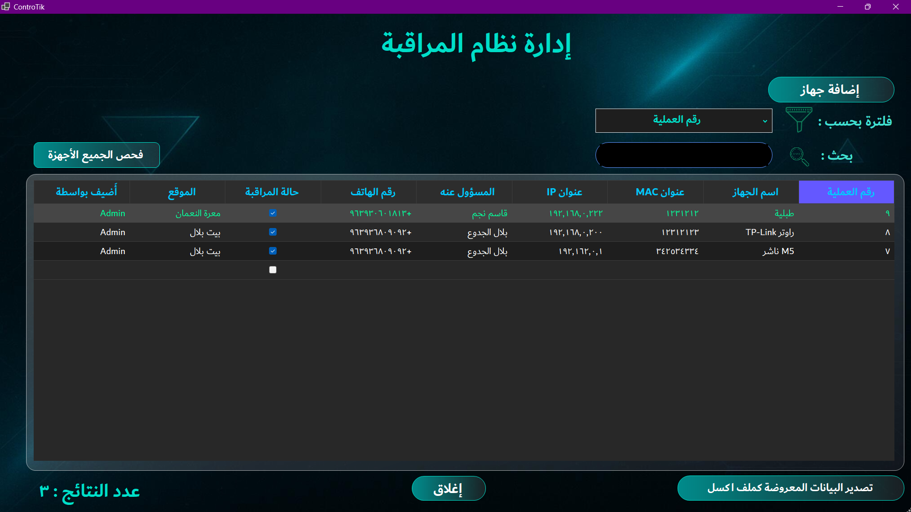
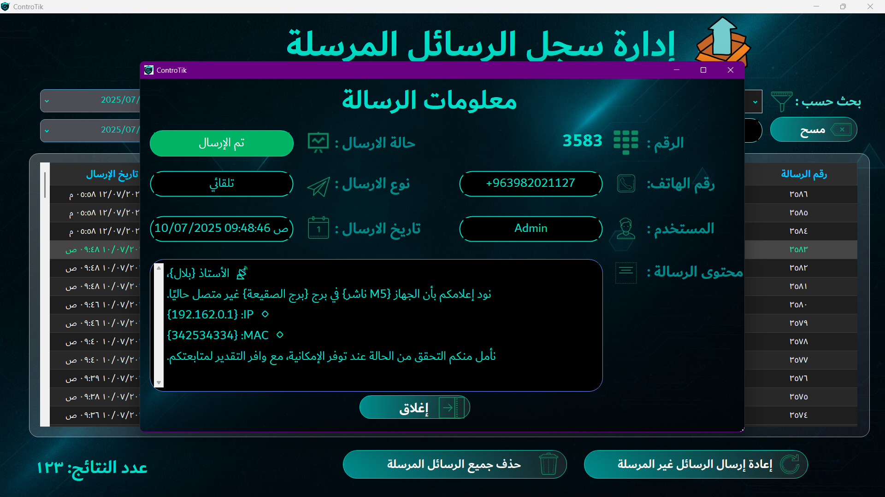

🛰️ نظام المراقبة الذكية في ControTik

تم تصميم نظام المراقبة في ControTik ليكون العين الساهرة على أجهزتك في الشبكة، من خلال تقنية
رصد فوري تنبهك تلقائيًا عند أي توقف أو عطل.
🔹 ما يقوم به النظام:
- يراقب جميع الأجهزة المرتبطة بسيرفر MikroTik.
- يراقب أي جهاز يمتلك Real IP مثل الكاميرات، النواشر، أجهزة البث، نقاط الاتصال وغيرها.
- يفحص حالة الاتصال بشكل دوري دون التأثير على أداء الشبكة.
🔔 عند حدوث أي انقطاع:
- يتم تحديد الجهاز المتوقف بدقة.
- يُرسل تنبيه فوري للمسؤول الفني أو مدير البرج المرتبط بالجهاز.
- يتضمن التنبيه: اسم الجهاز، عنوان الـIP والـMAC، الموقع الجغرافي (أو اسم البرج)، ووقت التوقف بالضبط.
🧠 مزايا ذكية إضافية:
- النظام لا يكتفي بالتنبيه، بل يُسجل كل حدث توقف في سجل خاص، يمكنك الرجوع إليه لاحقًا.
- يدعم إرسال التنبيهات برسائل واتساب أو إشعارات داخلية.
- واجهة رسومية تسهّل مراقبة الحالة اللحظية لجميع الأجهزة.
💡 مثالي لمن؟
هذا النظام مثالي لـ:
- أصحاب شبكات الإنترنت الذين يديرون أبراجًا متعددة أو نقاط توزيع منتشرة.
- موزعي كاميرات المراقبة الذين يحتاجون إلى رصد مستمر لأي انقطاع.
- الشركات التي تعتمد على أجهزة اتصال حساسة في التشغيل.
🛡️ هدفنا: أن تكون دائمًا في قلب الحدث، قبل أن يتصل الزبون للشكوى!
